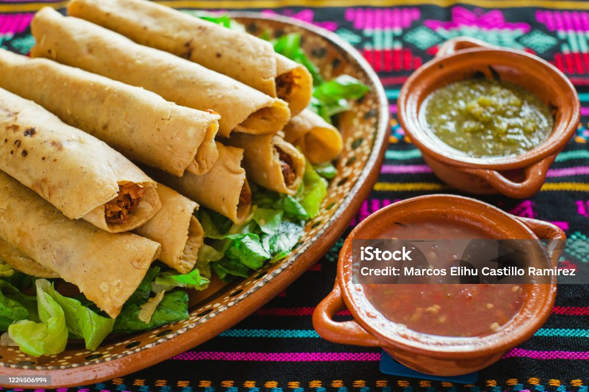

Flautas de pollito

Platillo: Flautas de pollo(si al paecer me gusta mucho el pollo)
Descripcion: Pollo hervido y desmenuzado envuelto en una tortilla, basicamente es un taco de pollo pero frito
por favor que sean tortillas de maiz, las de harina no saben nada bien creeme. o casi lo olvido la salsa es crucial, haz una salsita verde
Ingredientes:
- Pollo(si te sobra de otro platillo usalo, guino)
- Tortillitas, unas buenas de maiz, de maquina las de la tienda nop saben feo
- Crema
- Aceite
- La salsa verde que mencione anteriormente, es lo que le da vida a esto
- Oregano
- Sal al gusto
- Fijate que un agua de limon o jamaica acompana perfecto a estas flauas e.
Preparacion:
- Conseguir el pollo, matarlo si es necesario.
- Colocar el pollo en una cacerola agregar agua y poner a hervir
- Dejar hervir por unos 10 minutos
- Dejar hervir por otros 10 minutos
- Dejar hervir por unos 10 minutos
- Reitrar el pollo y limpiar quitar piel si es necesario
- Desmenusa el pollo y coloca porciones pequenas en la tortilla enrolla la tortilla y reserva para cuando el aceite este caliente
- En una sarten, colocar aceite y precalentar hasta que haga tsssssss, cuando sumerges tu mano
- Cuando este suficientemente caliente el aceite sumerge los tacos preparados anteriormente al aceite
- Dar vueltas a los tacos para que se frian uniformemente
- Sacar del aceite y escurrir, mucho aceito es malo
- Servir en un plato colocar su cremita, ponerle la salsta y pa dentro.
Home